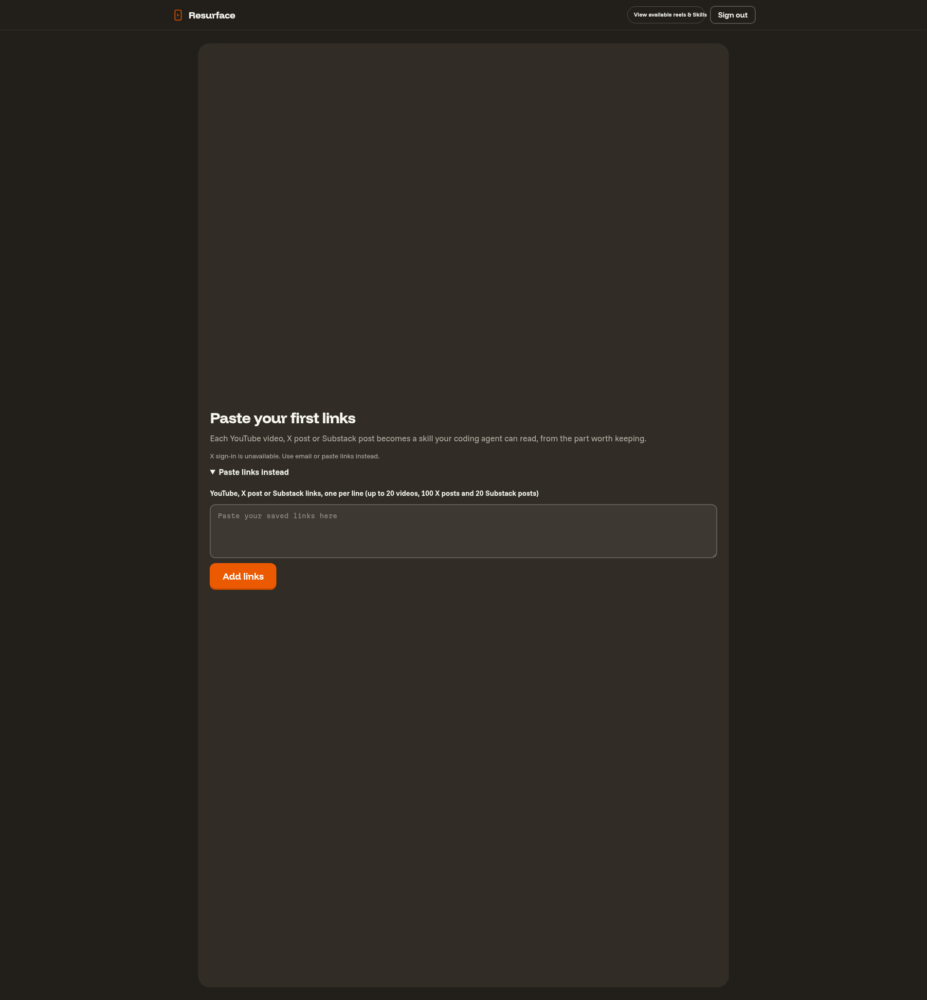
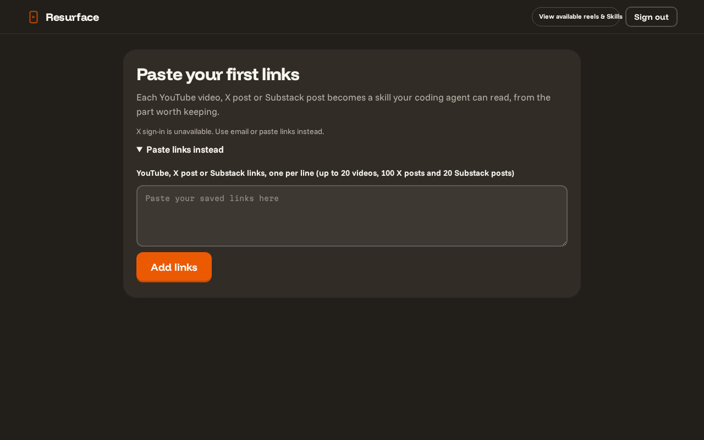
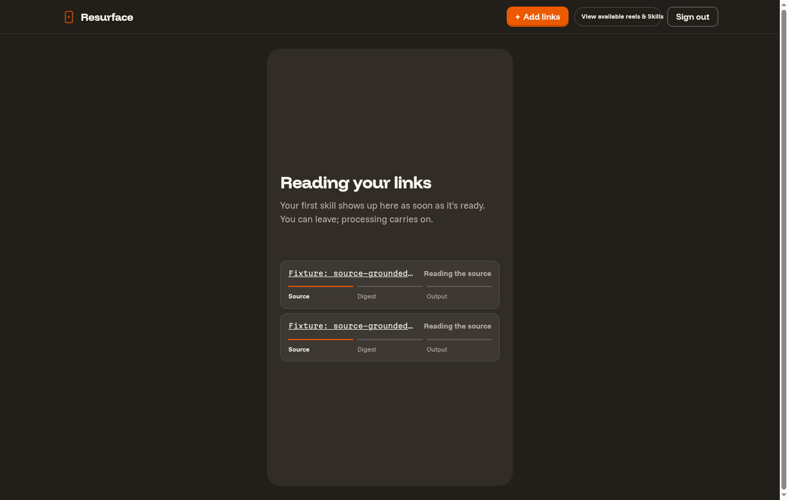
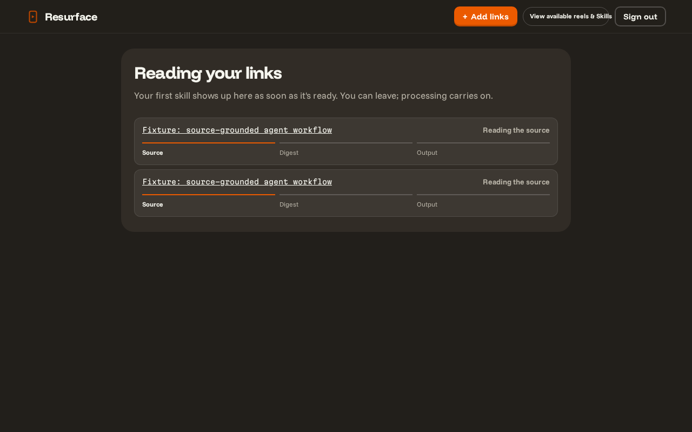
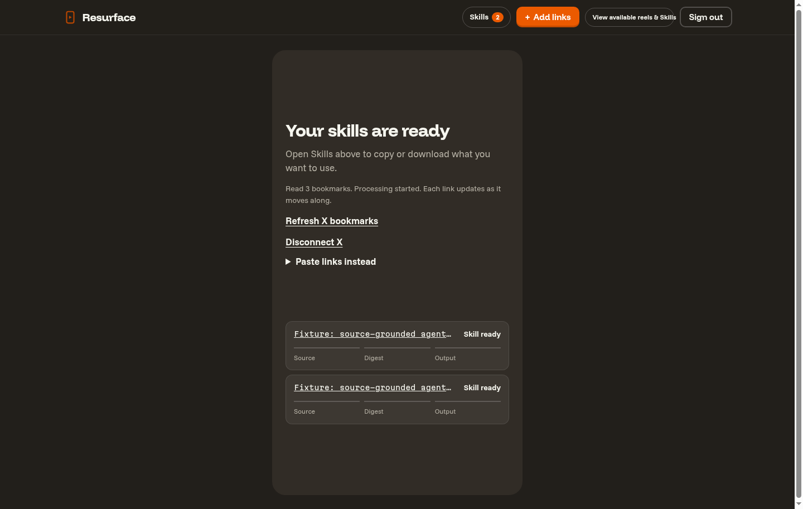
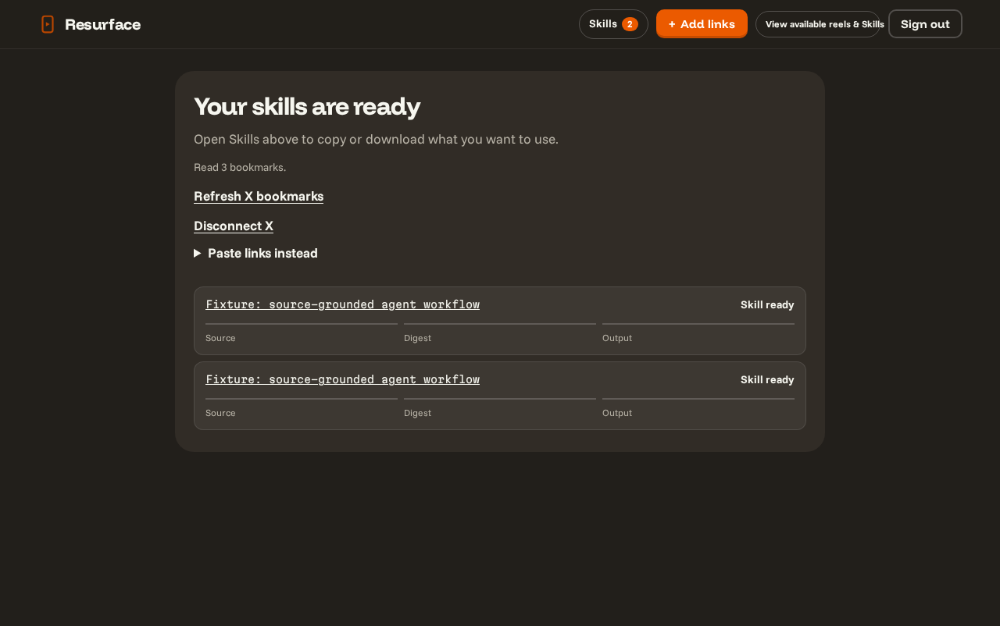

Before: supplied private deploy captures. After: real built app on Big-Machine in an isolated headless browser. X data and processor results are synthetic test fixtures; no live X requests.





